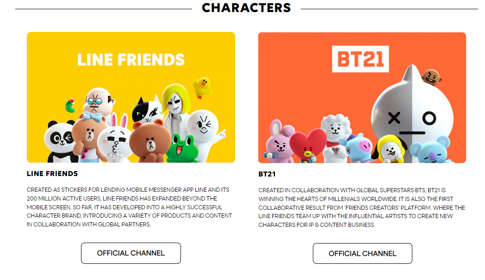

LINE Friends
For my software engineering course ICS 314, I had to recreate a webpage of my choosing using Bootstrap. At this time, we recently began learning about frameworks and how to use Bootstrap to create web pages. To make learning fun, I chose to recreate the LINE Friends Store About page, as I think the LINE Friends characters are fun and cute. I recreated the web page from scratch using Bootstrap’s predefined classes like Navbar and Container as well as Bootstrap Icons.
Here is a side-by-side comparison of my recreated page and the real website.
| Original LINE Friends About Page | Recreation LINE Friends About Page |
 |
 |
|  |  |
 |
 |
 |
 |
At the time of recreating the LINE Friends Store About page, I had a small introduction to Bootstrap before creating the web page. However, recreating a web page of my choice allowed me to have a hands-on learning experience and figure out how to use different Bootstrap features on my own. Although it was difficult to recreate the web page since I was a newbie to Bootstrap, it was also a rewarding experience to learn how to create this specific page from scratch.
My struggles helped me later on in ICS 314 when I had to complete a final project with a few classmates. In my final project, Manoa Study Abroad Central, I heavily relied on Bootstrap to create the layout of the different pages. On the landing and home page, I used Bootstrap Icons to make the page appear aesthetically pleasing and used pre-defined Bootstrap classes to format text and images on different pages.